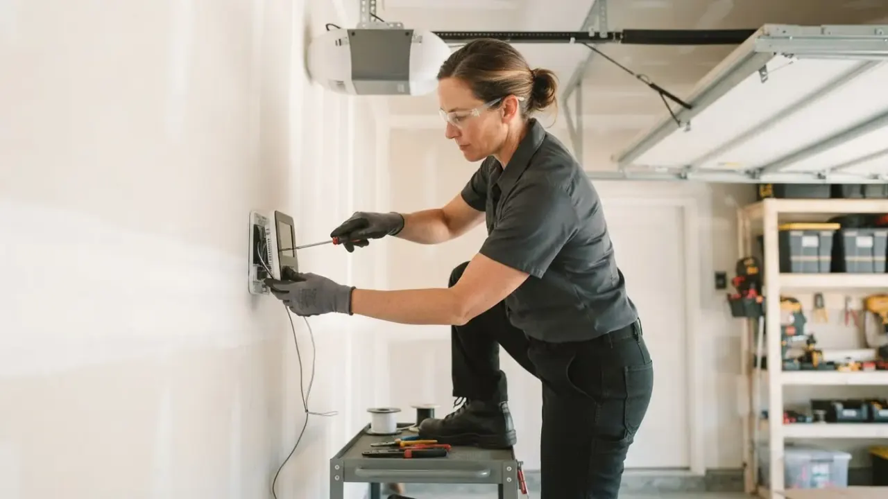
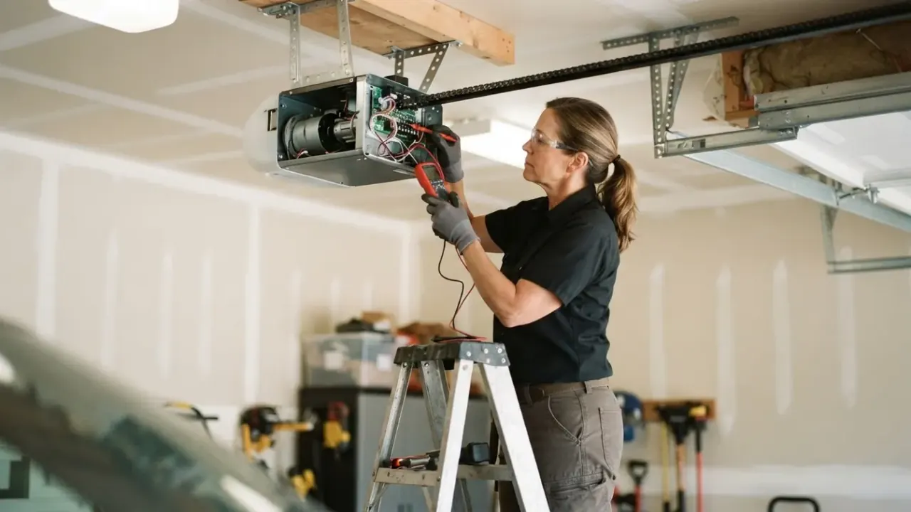

LiftMaster, Chamberlain and Genie openers wired, synced and safety-tested
Smart Garage Door Opener Installation in Tampa Done Right the First Time
Smart opener installation in Tampa means more than bolting a motor to the ceiling. The unit is mounted, the door balanced, the photo eye sensors aligned, and the phone paired before we leave. From South Tampa and New Tampa out toward Brandon, the techs handle LiftMaster, Chamberlain, Genie, and Craftsman openers daily. One app covers the whole house, and the door answers when tapped.
Live dispatcherUpfront optionsBacked workmanship
The basics
What Is Smart Garage Door Opener Installation?
Smart opener installation is the fitting of a Wi-Fi connected opener that is controlled and monitored from the phone. It opens or closes the door remotely, sends alerts when the door is left open, and shows whether the door is open or closed from anywhere. It is needed when the old opener is failing, when phone control and alerts are wanted, or when the door should work with a voice assistant or smart home system. Installation covers the opener, safety sensors, and setting up the app on the phone, with a walkthrough so it is known how to use it.
What's included
What our smart opener install includes
Every install covers the head unit, the wiring, the sensor alignment, and the app setup. When the door needs mechanical repair first, that is quoted separately and decided before work starts. Here is what a standard job brings.
Opener supply and mounting
The LiftMaster, Chamberlain, Genie, or Linear unit that fits the door weight and ceiling is supplied, then mounted to the ceiling and header bracket with a torque wrench. Old hardware comes down and leaves with us.
Low-voltage wiring
Wire is run and secured from the opener to the wall mount keypad and both photo eye sensors. Loose wiring is a common cause of intermittent opener faults, so it is stapled and routed out of the door's path.
Sensor alignment and safety test
Both sensors are aligned with a sensor alignment tool, then tested for the auto-reverse required by UL 325. The door is confirmed to reverse on contact, and a blocked beam stops the close cycle every time.
Travel limit and force setup
The door's open and close limits are set to seat it on the bottom rubber seal without crushing it, with force tuned to its actual weight. Right settings keep the opener from reversing for no reason a month later.
App, remote and keypad pairing
The opener is connected to WiFi, the account is created, remotes are paired, and the keypad is programmed. Voice assistant setup is included when one is used. The visit ends with a working app and a walkthrough, not a manual and a shrug.
Cleanup and haul-away
The garage floor is swept, the rail is wiped down, and the old opener and packaging are taken away. Nothing should show we were there except a door that answers the phone.
Service overview
What smart garage door opener installation in Tampa actually involves
A smart install replaces or upgrades the existing opener with a WiFi-connected unit, wires it to the home network, pairs the remotes and keypads, and calibrates travel limits and force so the door stops exactly where it should. It is needed when the old opener has no app control, when the door should be checked or opened from the phone, or when a builder-grade unit finally quits. Head unit, wall mount keypad, safety sensors, and battery backup on most models are all covered.
Tampa homes take a beating from humidity and summer heat, and that shortens the life of opener gears, remotes, and photo eye sensors. The usual triggers are a remote that only works from ten feet away, a keypad that stopped accepting the code, or a door that reverses for no reason, seen constantly in Carrollwood, Westchase, and Town 'N Country. A new smart unit fixes all three at once and adds a log of every open and close.

How we workWe verify the cause, compare realistic options, and confirm the repair before we leave.
The service timeline
How our smart opener install runs, start to finish
A smart install runs on a set order, though the door and the wiring shape the details. Five steps carry it from the first call to the handover.
Phone assessment
Door size, current opener brand, and whether a wall outlet sits near the ceiling are asked. That shows whether a LiftMaster, Chamberlain, or Genie unit is needed and whether a belt or chain drive fits the ceiling height. A firm price range comes before scheduling, usually within a few minutes.
Door and track check
Before anything is mounted, the door is run by hand. A door that binds, scrapes, or hangs halfway open will burn out a new opener in months. Torsion springs, galvanized steel cables, hinges, and tracks are checked, and it is said straight when a repair has to come first.
Removal and mounting
The circuit is killed, the old head unit and rail come down, and the new opener is mounted to the ceiling and header bracket. A torque wrench brings the bolts to spec so vibration does not loosen them. On a standard 16-foot door this stage runs about 45 minutes.
Wiring and sensor alignment
Low-voltage wire runs to the wall mount keypad and the two photo eye sensors, which are aligned with a sensor alignment tool. Misaligned sensors are a common reason a new opener appears dead. Travel limits and force are set so the door seats on the bottom rubber seal without crushing it.
App pairing and walkthrough
The last step is the one most installers skip. The opener is connected to WiFi, the account is created, remotes and keypad are paired, and any voice assistant is set up. Then the phone is handed over and the door is opened and closed by the homeowner. Total time is usually two to three hours.
Timing questions
How long does smart garage door opener installation take in Tampa?
Plan on two to three hours for a standard single or double door. Removal and mounting take about 45 minutes, wiring and sensor alignment another 30, and the app pairing and walkthrough the rest. If your door is off track or the springs are shot, add an hour. We do not rush the safety tests, because a door that reverses on a child is not a finished job.
Tools & methods
Tools and methods we use on every install
A smart install is only as good as the gear behind it. These are the tools that let the job be done right the first time.
Garage door torque wrench
Bolts on the mounting and header bracket are brought to spec, so daily-cycle vibration does not loosen the opener over time.
Garage door sensor alignment tool
The photo eye beam is aligned precisely, so it stays true through heat expansion and the door stops reversing without cause.
Garage door opener remote tester
Existing remotes are confirmed working before they are programmed to the new unit, so nothing is replaced that only needed a battery.
Garage door winding bars
Any time torsion springs are touched before an install, these are used. Springs store lethal energy, and proper bars are the only safe way to release or wind them.
Garage door cable drums and winding cones
A slipped cable means the drums and cones are reset or replaced, so the door lifts level and the new opener is not fighting one side.
Garage door track bender
Small bends in the vertical and horizontal tracks are straightened, or the door drags and trips the safety reverse.
Use cases
When Tampa homeowners call us for a smart opener
Smart opener calls in Tampa follow a few familiar patterns. These are two recent ones, and how each was handled.

Stuck door and stripped gears in Brandon
A Brandon family heard the opener motor running but the door would not move. The gears were stripped and one torsion spring had snapped, leaving the door stuck halfway open overnight. The torsion spring was replaced with proper winding bars and cable drums, a new Genie smart opener was installed, and the force was set to match the door's actual weight.
Rental property access in South Tampa
A South Tampa owner with a garage apartment was handing out remotes to tenants and changing codes every turnover. One tenant left with a remote and the owner had no way to revoke access. A smart opener with guest access in the app was installed.
Booking questions
Who installs smart garage door openers in Tampa?
We do, and we are a garage door contractor (licence number available on request) working out of Tampa. Our techs handle LiftMaster, Chamberlain, Genie, Craftsman and Linear units and carry the wiring, brackets and garage door opener remote tester needed to finish in one trip. We cover Hillsborough County including South Tampa, Brandon, Riverview, Lutz and Temple Terrace, with same-day slots most weeks.
Problems we solve
Problems a smart opener install solves for good
The call is rarely about wanting an app. It is about a door that behaves unpredictably. Here are the four complaints heard most in Tampa, and what the install does about each.
Remote only works from a few feet away
Weak remotes usually mean an aging receiver in the opener, not a dead battery. A new smart unit has a fresh receiver and antenna, and new remotes are paired to it. Reliable range comes from the street, plus app control as a backup.
Door reverses for no reason
Sensors are aligned with a sensor alignment tool and the travel limits on the new opener are reset. When a bent track or a worn roller is causing the drift, that is fixed too, so the reversal stops for good.
Opener runs but the door does not move
Diagnosis happens on site. Gone gears mean a replacement smart opener is the fix; a snapped torsion spring is replaced with proper winding bars and cable drums first, and only then is the new opener's force set to match the door.
No way to check the door when you are out
A WiFi opener shows the door status in the app from anywhere and sends an alert when it stays open. It can be closed from the phone in seconds. That single feature is why most Tampa customers upgrade.
About this service
What smart garage door openers work with a phone app in Tampa?
Most current models from the major brands, such as LiftMaster with MyQ, Chamberlain, and Genie with Aladdin Connect, offer phone control and alerts. The app lets you open and close the door, check whether it is open, and get a notification if it is left open. The technician can explain which models work with your door and your phone, and whether your home Wi-Fi reaches the garage reliably, since a weak signal affects how well the app works.
Is a smart garage door opener secure in Tampa?
Yes, when it is set up properly. Modern openers use rolling codes, so the signal changes every time the remote is used, and the app needs your phone and your account to open the door. You should use a strong password for the app, keep the app updated, and change the keypad code if someone who had it no longer needs access. The technician sets up the app with you and shows you the security settings during the walkthrough.
Can I open my garage door from my phone when I am not home?
Yes, that is the main point of a smart opener. The app lets you open and close the door from anywhere, check whether it is open or closed, and get alerts when it moves. You can also give time-limited access to a visitor and revoke it afterwards. The door will still work from the wall control and the remote if the Wi-Fi goes down, so you are never locked out by an internet outage.
Is a smart garage door opener secure?
Yes, when it is set up properly. Modern smart openers use rolling codes and encrypted connections, and each user should have their own login. The risks come from setup mistakes: a weak Wi-Fi password, a shared login, or guest access that is never revoked. The technician will set up the opener with your own logins and show you how to manage access, so the security is real and not just a setting.
Choosing and deciding
What is the best smart garage door opener in Tampa?
For most Tampa homes, a LiftMaster or Chamberlain with MyQ is the safest bet because the app is stable and parts are stocked locally. Genie Aladdin Connect is a solid budget pick. If your garage gets direct afternoon sun, choose a belt-drive model with a battery backup, since heat and summer storms knock out power here more than most markets. We will match the unit to your door weight and ceiling.
Do I need good Wi-Fi in my garage for a smart opener in Tampa?
Yes. The opener connects to your home Wi-Fi to send alerts and to let you control the door from your phone. If the signal in the garage is weak, the app may be slow or drop out. Before the install, check whether your phone has a good Wi-Fi signal in the garage. If it does not, a Wi-Fi extender or a mesh node near the garage usually fixes it, and the technician can tell you on the visit whether the signal is strong enough.
Do I need Wi-Fi in my garage for a smart garage door opener?
Yes. A smart opener connects to your home Wi-Fi, usually on the 2.4 GHz band, and it needs a steady signal in the garage. If the router is far from the garage, the signal may be too weak, and a Wi-Fi extender or a mesh node may be needed. The technician tests the signal strength in the garage before installation and will tell you if anything extra is needed.
Pricing process
What smart opener installation costs in Tampa
$350 - $750 installed, plus $185 - $385 if door repairs are needed first
Opener model and drive type
Chain-drive units are the cheapest smart-ready option. Belt-drive and DC motor openers add $80 to $200 but run much quieter, which matters with a bedroom over the garage, and battery backup and built-in cameras cost extra.
Door size and weight
A lighter-duty opener serves a single-car door than a 16-foot double or an insulated three-car door. Heavier doors take a higher-horsepower unit, sometimes with a reinforced header bracket.
Existing wiring and outlets
A ceiling outlet and low-voltage wire to the keypad already in place makes the install straightforward. Older Tampa garages without a nearby outlet or neutral may need a short wiring run, which adds labor to the $350 to $750 install.
Cost factors at a glance
| Cost factor | What affects the price |
|---|---|
| Typical range on this page | $350 - $750 installed, plus $185 - $385 if door repairs are needed first |
| Opener model and drive type | Chain-drive units are the cheapest smart-ready option. |
| Door size and weight | A lighter-duty opener serves a single-car door than a 16-foot double or an insulated three-car door. |
| Existing wiring and outlets | A ceiling outlet and low-voltage wire to the keypad already in place makes the install straightforward. |
Ranges are the ones stated on this page; you get a written estimate before work starts.
Cost questions
How much does smart garage door opener installation cost in Tampa?
Most jobs run $350 to $750 installed, depending on the opener model and whether your door needs repair first. A basic WiFi chain-drive unit sits at the low end; a belt-drive LiftMaster or Chamberlain with battery backup and camera runs higher. If we have to replace a broken torsion spring or a snapped garage door cable, that adds $180 to $450. You get the full number before we start.
Customer reviews
What Tampa homeowners say
★★★★★
“Our old opener only worked from the driveway, and the keypad had been dead for a year. The tech checked the springs first, replaced two worn rollers, then installed a Chamberlain with WiFi. He paired both our phones and set the door to close at 10 p.m. every night. Took about two and a half hours and the price matched the quote.”
★★★★★
“I wanted to stop wondering whether the garage was open when I left for work. They installed a LiftMaster with battery backup and showed me the app log. The sensor alignment was off from the old install and they fixed that too. Clean work, no mess left behind, and the door is much quieter than before.”
★★★★★
“Called about a door that would not close and ended up with a smart opener the same afternoon. They found a bent track, straightened it, replaced the safety sensors and installed a Genie unit. I can open the door for deliveries from my phone now. Straight answers and no upsell on things I did not need.”
Book with confidence
What to Look for Before You Book
Before booking a smart install, a few simple checks keep a small job from turning into a surprise bill.
- The licence number comes before any work starts, checked against the name on the quote.
- The full quote arrives in writing, door or opener model, parts, labour, permit, and removal of the old door included.
- Whether a permit is needed, and whether the company handles it, is asked up front.
- Recent reviews are read, with a focus on customers who had the same kind of installation.
- Warranty cover for the door or opener and the installation work, and its length, comes in writing.
- The install date and arrival window are confirmed, with a number to call if the schedule changes.
Connectivity
Smart Openers and Home Wi-Fi: What Actually Needs to Work
A smart opener is only as good as the Wi-Fi it connects to, and the garage is often the weakest spot in a home network. The opener needs a steady 2.4 GHz signal, because most smart openers use 2.4 GHz rather than 5 GHz, and the signal has to reach through walls and a closed garage door. If the router is at the far end of the house, the signal in the garage may be too weak, and the opener will drop offline, miss alerts, and fail to respond to the app. The technician tests the signal strength in the garage before installation, and will tell you if a Wi-Fi extender or a mesh node is needed.
The phone matters too. The app needs to be set up on the phone that will use it, with notifications turned on, and the opener needs to be linked to the account, not just to the phone. If the home has more than one user, each person needs their own login, because sharing a single login means no record of who opened the door. And if the Wi-Fi password changes, the opener will need to be reconnected, which is a common cause of a smart opener that suddenly stops working. The technician will walk through all of this on the day, so the smart features work when you need them, not just on the day they are installed.
- 2.4 GHz signal: most smart openers use 2.4 GHz, and the signal must reach the garage reliably.
- Signal test: the Wi-Fi strength is tested in the garage before installation.
- Extender if needed: a weak signal means an extender or a mesh node, not a different opener.
- Own logins: each user should have their own login, so there is a record of who opened the door.
- Password changes: if the Wi-Fi password changes, the opener will need reconnecting.
Features
Geofencing, Alerts, and Guest Access: Using the Features You Paid For
Most smart openers are bought for one feature and used for another. Geofencing, which opens the door as you approach and closes it as you leave, is the feature most people ask about, but it needs the phone location settings to be right, and it needs the app to be running in the background, or it will not trigger. Alerts are the feature most people end up valuing: a notification when the door opens, when it closes, and when it has been left open, which is useful when the garage is the main entrance and children come and go.
Guest access is the feature that is most often set up wrong. A smart opener can give a visitor, a cleaner, or a contractor access for a set time, and then revoke it automatically, which is far safer than sharing a keypad code that is never changed. But guest access needs to be set up with an expiry, and it needs to be checked after the visit, because an access that is never revoked is no better than a shared code. The technician will set up the features you want on the day and show you how to change them, so the smart opener is actually smart, and not just a remote with an app.
- Geofencing: needs the phone location settings right and the app running in the background.
- Alerts: a notification when the door opens, closes, or is left open, which is the feature most people value.
- Guest access: time-limited access for visitors, which is safer than sharing a keypad code.
- Set an expiry: guest access should expire automatically, and it should be checked after the visit.
- Shown on the day: the technician sets up the features you want and shows you how to change them.
Related services
Related Services

Garage Door Repair
A new smart opener cannot fix a door that binds or scrapes. A door that drags on the tracks or hangs halfway open is repaired first, then the opener is installed so the motor is not fighting a mechanical problem from day one.
Garage Door Spring Repair
A tired torsion spring forces a smart opener to work harder and cuts its life short. Broken torsion and extension springs are swapped before or during an install, with proper winding bars and cable drums, so the new unit lifts the door at the force it was rated for.
Garage Door Opener Repair
When the current opener is running but not lifting, or the remote only works up close, a repair may cost less than a full replacement. Opener gears, logic boards, and remotes are diagnosed first, with an honest answer on whether a smart upgrade is worth it.Ready when you are
Get your smart garage door opener installation in Tampa booked
As a garage door contractor (licence number available on request) serving Hillsborough County, same-day slots are open most weeks. One call brings a firm price, a time window, and a tech who finishes the app setup before leaving. Call now and the door will be online.

Talk with the local team
Request Smart Garage Door Opener Installation
Call, text or email and a real person answers, day or night. Tell us what the door is doing and we will give you a price range on the spot plus the soonest arrival window. Most calls placed before mid-afternoon get a same-day visit anywhere in Hillsborough County.